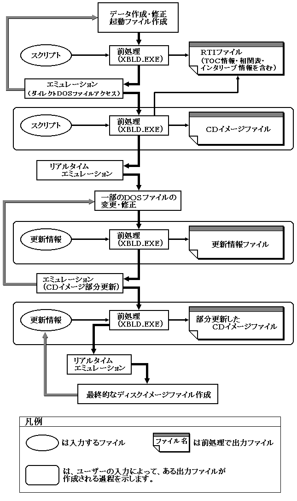

★PROGRAMMER'S GUIDE
★バーチャルCDシステム
★PROGRAMMER'S GUIDE
★バーチャルCDシステム
▲
戻る｜
進む▼
バーチャルCDシステムユーザーズマニュアル
第２章 ＣＤエミュレーション操作手順
この章では操作手順を次の３種類のエミュレーションモデルに分けて説明します。
操作手順はほとんど同じですが、エミュレーションを実行するために必要なファイルが異なります。これらのファイルはエミュレーションの前処理プログラムによって生成されます。
- ●「ダイレクトDOSファイルアクセス」
- CDイメージになる前のデータファイルの集まりと、CDの構成情報ファイルが必要です。
このCD構成情報ファイルは、スクリプトファイルよりCDビルダXBLDを使って生成します。第2.1項で説明します。
- ●「リアルタイムエミュレーション」
- CDイメージがそのまま入っているファイルを用意します。
このCDイメージファイルは、スクリプトファイルよりCDビルダXBLDを使って生成します。第2.2項で説明します。
- ●「CDイメージ部分更新」
- CDイメージファイルと修正部分のMS-DOSファイル及び更新情報ファイルが必要です。
CDイメージ部分更新ツールVCDUTLを使って更新情報ファイルを作成します。
エミュレーション実行時のパラメータも異なります。第2.3項で説明します。
図-3. 操作手順概要

2.1 MS-DOSファイルのままエミュレートする場合
- この節では「ダイレクトDOSファイルアクセス」の操作手順について説明します。
- [手順０]
- プロジェクト名をボディとし、拡張子が「DSK」のファイルが存在している場合、そのファイルを削除します。
このファイルが存在していると「ダイレクトDOSファイルアクセス」動作になりません。このファイルは次節の「リアルタイムエミュレーション」を以前行った時に生成されたものです。
- [例０]
C:\>DEL△TSTGAME.DSK[ENTER]
~~~~~~~~~~~~~~~~~~~~~~~
- [手順１]
- プロジェクト名を決めます。
MS-DOSファイルのファイル名のボディ部分として使用するものです。MS-DOSファイルの規約に合わせてください。
- [例１] TSTGAME
- この章の説明では「TSTGAME」を使います。
- [手順２]
- スクリプトファイルを作成します。
スクリプトファイルは作成するCD上のデータ配置を指定するものです。
スクリプトの記述方法については「ＣＤビルダユーザーズマニュアル」で説明します。
スクリプトファイルのファイル名はプロジェクト名に拡張子「SCR」をつけたものにします。
- [例２] TSTGAME.SCR
- [手順３]
- CDビルダ(XBLD.EXE)を「-p」オプションをつけて起動します。
例のようにコマンドを入力すると、CDビルダ(XBLD.EXE)が起動し、エミュレーションに必要なファイルを作成します。
- [例３]
C:\>XBLD△-p△TSTGAME[ENTER]
~~~~~~~~~~~~~~~~~~~~~~~~
- [結果３]
CDのボリューム記述子情報を格納するPVDファイルとCD構成情報を記述するRTIファイルが作成されます。
- PVD ファイル：TSTGAME.PVD
- RTI ファイル：TSTGAME.RTI
- [手順４]
- 英語環境にします。
バーチャルCDエミュレータは日本語モードでは動作しませんので、ディスプレイを英語モードにします。次のコマンド行を打ち込みます。
C:\>CHEV△US[ENTER]
~~~~~~~~~~~~~~~
- [結果４]
もし、日本語モードになっていた場合は、画面がフラッシュし、画面の先頭にプロンプトが来ます。
- [手順５]
- バーチャルCDエミュレータ(VCDEMU.EXE)を起動します。
例のようにコマンドを入力することによって、バーチャルCDエミュレータが起動し、「ダイレクトDOSアクセス」動作をすることになります。
- [例５]
C:\>VCDEMU△TSTGAME[ENTER]
~~~~~~~~~~~~~~~~~~~~~~
- [結果５]
バーチャルCDエミュレータの初期画面が表示されます。
バーチャルCDエミュレータが起動しています。
- [手順６]
- ターゲットボックスからの操作を開始してください。
ターゲットボックスから受けたコマンド、データ転送状態、エラーメッセージなどが、バーチャルCDエミュレータの画面に表示されます。表示内容については第3章を参照してください。
2.2 CDイメージを作る場合
- この章では「リアルタイムエミュレーション」の操作手順について説明します。
すでに「ダイレクトDOSファイルアクセス」を行っている場合、手順３からの操作になります。
行っていない場合は、前項の手順１〜２を実行してください。
- [手順３]
- CDビルダ(XBLD.EXE)を「-r」オプションをつけて起動します。
例のようにコマンドを入力すると、CDビルダ(XBLD.EXE)が起動し、エミュレーションに必要なファイルを作成します。
- [例３]
C:\>XBLD△-r△TSTGAME
~~~~~~~~~~~~~~~~~
- [結果３]
CDイメージを格納するDSKファイルと
CD構成情報を記述するRTIファイルが作成されます。
- DSK ファイル：TSTGAME.DSK
- RTI ファイル：TSTGAME.RTI
- 前項の手順４〜６を実行してエミュレーションしてください。
2.3 CDイメージの一部を更新する場合
- この章では「CDイメージ部分更新」の操作手順について説明します。
すでに「リアルタイムエミュレーション」を行っている場合に利用することができます。
「リアルタイムエミュレーション」のための前処理を行い、拡張子「DSK」を持つファイルが生成されていなければなりません。前項の手順１〜３を実行してください。
- [手順４]
- CDイメージ部分更新ツール(VCDUTL.EXE)を「-f」オプションをつけて起動します。
例のようにコマンドを入力すると、CDイメージ部分更新ツール(VCDUTL.EXE)が起動し、エミュレーションに必要なファイルを作成します。
「-f」オプションをつけずにこの前処理を行った場合、「リアルタイムエミュレーション」用のファイルだけが生成（修正）されます。この場合は前項の手順4以降による「リアルタイムエミュレーション」を行ってください。
- [例４]
C:\>VCDUTL△TSTGAME△ISOFILE.DDD△DOSFILE.D01
~~~~~~~~~~~~~~~~~~~~~~~~~~~~~~~~~~~~~~~~~
DOSFILE.D02△-f△TSTGAME.PAT[ENTER]
~~~~~~~~~~~~~~~~~~~~~~~~~~~~~~~~~~~
- この例はTSTGAMEで生成されたCDイメージ中、ISOFILE.DDDというISO9660ファイルを構成するデータファイルの中のDOSFILE.D01というDOSファイルをDOSFILE.D02というDOSファイルに置き換えることを表わします。
- [結果４]
更新情報ファイル：TESTGAME.PATが生成されます。
更新情報ファイルのファイル名に対する規則は設けていません。
- [手順５]
- 英語環境にします。(前々項参照)
- [手順６]
- 「-u」オプションをつけてバーチャルCDエミュレータ(VCDEMU.EXE)を起動します。
例のようにコマンドを入力すると、バーチャルCDエミュレータが起動し、「CDイメージ部分更新」動作をすることになります。
- [例６]
C:\>VCDEMU△TSTGAME△-u△DOSGAME.PAT[ENTER]
~~~~~~~~~~~~~~~~~~~~~~~~~~~~~~~~~~~~~~~
- [結果６]
バーチャルCDエミュレータの初期画面が表示されます。
バーチャルCDエミュレータが起動されています。
- [手順7]
- この状態以降は、ターゲットボックスからの操作を開始してください。
(前々項参照)
▲
戻る｜
進む▼
★PROGRAMMER'S GUIDE
★バーチャルCDシステム
Copyright SEGA ENTERPRISES, LTD,. 1997